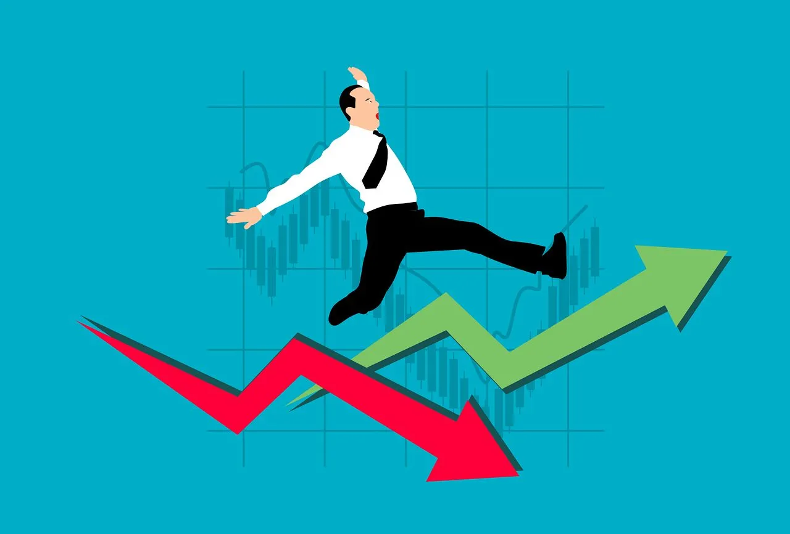

Table of Content
- What is Trading?
- Different types of traders
- What is Investing?
- Which is better in the stock market, trading or investing?
- Who Should Choose Trading?
- Who Should Choose Investing?
- Conclusion
- Frequently Asked Questions
Which is better in the stock market, trading or investing?
To most people, this can be a very confusing field, especially when determining which is better in the stock market, trading or investing. These are two ways to make money with stocks, both with their advantages and disadvantages.
What is Trading?
Trading is the act of buying and selling of stocks or futures and options on day-to-day basis. It usually covers a short period. The objective of trading is to earn some amount of profit from sudden movements in the stock prices. The traders trade on the actual and estimated fluctuations in prices for a few minutes, hours or days, rather than considering the long-term future of the company.
There are different types of traders:
Day traders buy and sell stocks within a single day, making lots of trades.
Swing traders hold stocks for a few days or weeks to catch short-term trends.
One important thing about trading is that it demands your constant attention. You need to keep track of stock prices and news at all times, working to predict when prices will go up or down.
What is Investing?
Investing is long-term focus. There are investors buying stocks that they keep for many years or even decades; sometimes even for generations. This is believed to have its value increase overtime. Investors are interested in the company's future growth & profitability.
Stability it is also what concerns investors. Investors believe that if a company is doing well in terms of operations, the stock price should ultimately reflect this performance as well.
The most famous example of an investor is Warren Buffett. He buys stocks of companies he believes will grow in many years instead of worrying about short-term ups and downs in the market.
Which is better in the stock market, trading or investing?
Time Distance
Traders think in minutes, days or weeks.
Investors think in years or periods.

Risk and Reward
Trading is much riskier because the stock price may change very fast and the tendency to predict those movements is quite challenging. However, if it is done correctly, the reward is very rewarding.
The long-term risks associated with investing are less because in a solid investment, if you have invested in good companies, the stock price will only go up.
Time Commitment
Traders have to always monitor the stock market, news and charts. It almost is a full-time job.
Once they identify good stocks, investors are not required to constantly monitor the stock market on a daily basis. They just sit back and watch how their investments grow over time.
Hidden Costs of Trading
One of the lesser-known facts about trading is that it can be expensive, even though it appears profitable. Every time you buy or sell a stock, you may have to pay a transaction fee to the broker. If you do a high number of trades, these fees will add up and consume much of the profit.
Investors generally hold their stocks for much longer and get tax benefits in the lower tax rates on profits from long-term capital gains.
Stress and Emotion
Also, trading is very stressful. Just imagine having to make split-second decisions all the time whether to buy or sell and how much to sell or buy knowing that making one mistake could put you in a financial situation where you have lost money in the amounts you were expecting. Traders often speak of feeling emotionally drained after watching stock prices day after day, particularly when things do not go well. This is called emotional volatility—your mood goes up and down with the market.
Investing, on the other hand, is usually more peaceful. Investors don't care about daily price changes. They trust that, over time, their stocks will grow in value. If the stock market drops one day, it doesn’t make them panic, because they’re thinking long-term.
Knowledge and Skills
Traders need to be very skilled at reading stock charts, understanding patterns, and making quick decisions. They often use something called technical analysis, which involves studying past stock prices and predicting future movements based on patterns. It's somewhat like trying to predict the weather, you can guess, but is not necessarily correct.
Investors, on the other hand, don’t need to be experts in stock charts. Instead, they look at what is called fundamental analysis, which means they study how a company is doing in the real world. They study the company's net earnings, its plans for the near future, and who it competes with. If they feel that it will go well in the future, then they buy a stock and hold it for the long term.
The Power of Compounding
A lot of people do not discuss compounding much when it comes to investing. Compounding happens when your investment earns returns, and those returns then start earning returns of their own.
For example, let's say you invest Rs1,000 in a share that grows 10% every year. Then after one year, you have Rs1,100 and in the second year 10% on Rs1,100 has been yielded Rs1,210, and so on. Over 20 or 30 years, this can turn a small investment into something much bigger.
Traders miss out on the power of compounding because they don’t stay in any one stock long enough for this to happen. They’re too focused on short-term profits.
The "Noise" of the Market
Another unique point about trading that isn’t often covered is how traders must deal with market noise. This refers to all the little price movements and news updates that don’t really matter in the long run but can cause traders to make bad decisions. For example, if a company has a great long-term future but its stock drops one day because of some minor bad news, a trader might panic and sell the stock, missing out on future gains. Investors ignore some minor bad news and focus on the futures stock price.
Who Should Choose Trading?
Trading is for people who:
- 1) Have time to dedicate to watching the market.
- 2) Are willing to take risks for the chance of quick profits.
- 3) Can handle the emotional ups and downs.
- 4) Have advanced knowledge of technical analysis.
Who Should Choose Investing?
Investing is for people who:
- 1) Want to build capital slowly over time like a year or generation.
- 2) You don't have the time or keep an eye on the share market every day.
- 3) Are patient & can wait for long-term profit gains.
- 4) Believe in the power of compounding and want to minimize risk.
Conclusion
So, at the end which is better in the stock market, trading or investing? The choice wholly depends on the personality and goals of the person along with the time available. Trading does bring about speedy revenues but is way riskier and stressful. Investing is safe, easy-going, and makes your money compound over a long period of time. Most people, however, should invest. As far as persons who enjoy taking risks and have such skills, they may be traders. It's just what suits you the best and also check our Disclaimer page.
Frequently Asked Questions
What is better, investing or trading?
While investing is effective in terms of long-time growth, trading is risky and all about short-term gains.
Is it better to save money or invest in stocks?
Investments in the stock can grow money more, but savings will be safer for short-term needs.
Difference between trading and investing in stock market
Trading is selling and buying stock for short-term profit, but the investment holds stock in the long run for growth.
How to learn trading
You learn trading by first studying the market, then practicing with small amounts, and then following expert advice and subscribe our site.